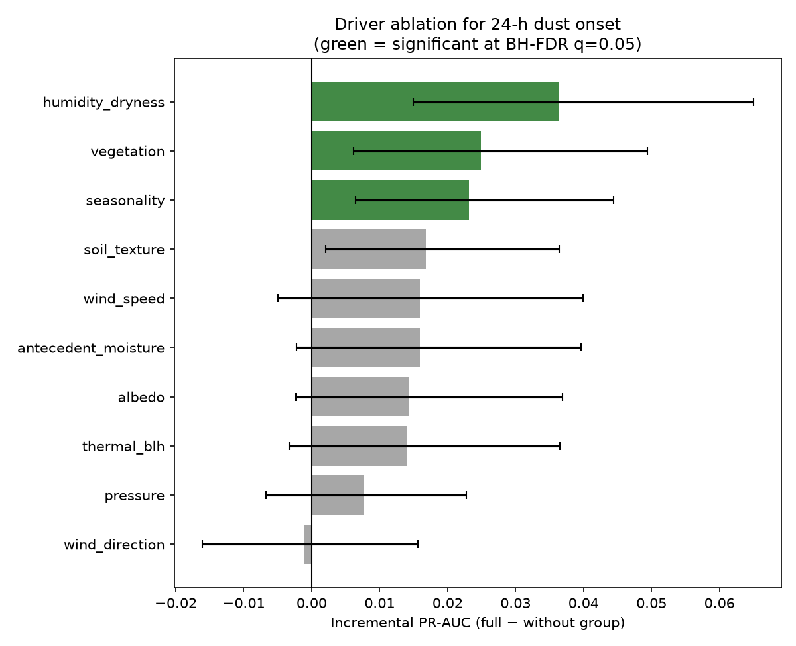
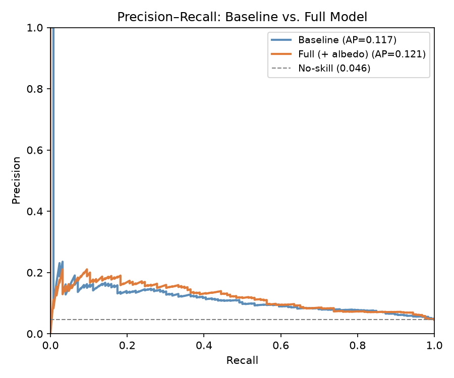

A reproducible, keyless machine-learning study of 24-hour dust-storm onset in Saudi Arabia — and a systematic ablation of which satellite drivers actually matter.
Each physical driver group is dropped, the model retrained, and the change in PR-AUC measured with a paired bootstrap 95% CI. Only vegetation clears zero.

| Driver group | Incremental PR-AUC | 95% CI | Significant |
|---|---|---|---|
| vegetation (NDVI) | +0.018 | [+0.007, +0.037] | yes |
| antecedent moisture | +0.008 | [−0.004, +0.021] | no |
| pressure | +0.007 | [−0.002, +0.018] | no |
| wind direction | +0.005 | [−0.018, +0.021] | no |
| wind speed | +0.005 | [−0.023, +0.027] | no |
| albedo | +0.004 | [−0.015, +0.022] | no |
| soil texture | −0.003 | [−0.013, +0.007] | no |
A logistic surrogate of the model (synthetic data). Move the drivers; the probability updates live. Notice how much wind and northerly (shamal) flow move the needle versus albedo.
F₂ depends on a decision threshold, which is sensitive to noise at a ~6% positive rate. The primary metric is therefore PR-AUC (threshold-free; the standard for rare-event detection), with ROC-AUC and operational F₂ alongside. On a synthetic benchmark with two known driver signals, the ablation recovers exactly those two — wind direction and albedo — confirming it isolates true drivers from noise.
